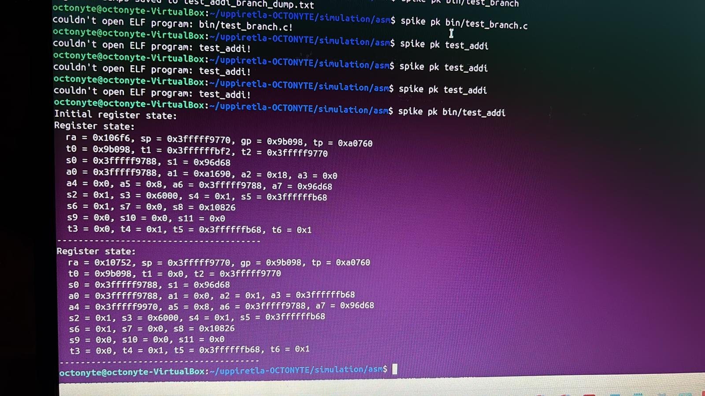
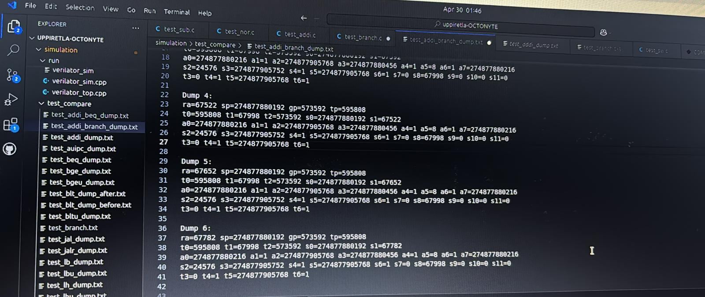
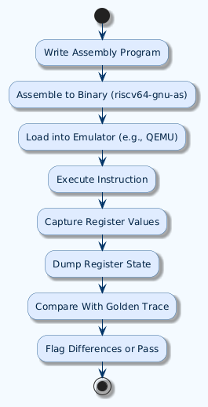

Simulation Engineer | RISC-V ISA & Golden Model Validation
I’m a simulation engineer focused on validating RISC-V ISA implementations using assembly programs and comparing results against golden models. I specialize in logical, arithmetic, and control instruction behavior using Spike and hardware trace comparisons.
Output txt sample snapshot

Output terminal example snapshot

#include#include #include #define MAX_DUMPS 100 // Maximum number of state dumps typedef struct { unsigned long ra, sp, gp, tp; unsigned long t0, t1, t2; unsigned long s0, s1; unsigned long a0, a1, a2, a3, a4, a5, a6, a7; unsigned long s2, s3, s4, s5, s6, s7, s8; unsigned long s9, s10, s11; unsigned long t3, t4, t5, t6; } RegisterState; typedef struct { RegisterState states[MAX_DUMPS]; int count; } RegisterDump; // Function to save register dumps to a text file void save_register_dump(const RegisterDump *dump, const char *filename) { FILE *file = fopen(filename, "w"); if (!file) { perror("Failed to open file"); return; } for (int i = 0; i < dump->count; i++) { RegisterState state = dump->states[i]; fprintf(file, "Dump %d:\n", i + 1); fprintf(file, "ra=%lu sp=%lu gp=%lu tp=%lu\n", state.ra, state.sp, state.gp, state.tp); fprintf(file, "t0=%lu t1=%lu t2=%lu s0=%lu s1=%lu\n", state.t0, state.t1, state.t2, state.s0, state.s1); fprintf(file, "a0=%lu a1=%lu a2=%lu a3=%lu a4=%lu a5=%lu a6=%lu a7=%lu\n", state.a0, state.a1, state.a2, state.a3, state.a4, state.a5, state.a6, state.a7); fprintf(file, "s2=%lu s3=%lu s4=%lu s5=%lu s6=%lu s7=%lu s8=%lu s9=%lu s10=%lu s11=%lu\n", state.s2, state.s3, state.s4, state.s5, state.s6, state.s7, state.s8, state.s9, state.s10, state.s11); fprintf(file, "t3=%lu t4=%lu t5=%lu t6=%lu\n\n", state.t3, state.t4, state.t5, state.t6); } fclose(file); } // Function to load register dumps from a text file void load_register_dump(RegisterDump *dump, const char *filename) { FILE *file = fopen(filename, "r"); if (!file) { perror("Failed to open file"); return; } dump->count = 0; while (dump->count < MAX_DUMPS && fscanf(file, "Dump %*d:\n" "ra=%lu sp=%lu gp=%lu tp=%lu\n" "t0=%lu t1=%lu t2=%lu s0=%lu s1=%lu\n" "a0=%lu a1=%lu a2=%lu a3=%lu a4=%lu a5=%lu a6=%lu a7=%lu\n" "s2=%lu s3=%lu s4=%lu s5=%lu s6=%lu s7=%lu s8=%lu s9=%lu s10=%lu s11=%lu\n" "t3=%lu t4=%lu t5=%lu t6=%lu\n\n", &dump->states[dump->count].ra, &dump->states[dump->count].sp, &dump->states[dump->count].gp, &dump->states[dump->count].tp, &dump->states[dump->count].t0, &dump->states[dump->count].t1, &dump->states[dump->count].t2, &dump->states[dump->count].s0, &dump->states[dump->count].s1, &dump->states[dump->count].a0, &dump->states[dump->count].a1, &dump->states[dump->count].a2, &dump->states[dump->count].a3, &dump->states[dump->count].a4, &dump->states[dump->count].a5, &dump->states[dump->count].a6, &dump->states[dump->count].a7, &dump->states[dump->count].s2, &dump->states[dump->count].s3, &dump->states[dump->count].s4, &dump->states[dump->count].s5, &dump->states[dump->count].s6, &dump->states[dump->count].s7, &dump->states[dump->count].s8, &dump->states[dump->count].s9, &dump->states[dump->count].s10, &dump->states[dump->count].s11, &dump->states[dump->count].t3, &dump->states[dump->count].t4, &dump->states[dump->count].t5, &dump->states[dump->count].t6) == 32) { dump->count++; } fclose(file); } // Function to fetch register values using RISC-V inline assembly void get_registers(RegisterState *regs) { /* Max of 30 input operands in a single asm statement */ /* First block: capture 16 registers */ __asm__ volatile ( "mv %0, ra\n" "mv %1, sp\n" "mv %2, gp\n" "mv %3, tp\n" "mv %4, t0\n" "mv %5, t1\n" "mv %6, t2\n" "mv %7, s0\n" "mv %8, s1\n" "mv %9, a0\n" "mv %10, a1\n" "mv %11, a2\n" "mv %12, a3\n" "mv %13, a4\n" "mv %14, a5\n" "mv %15, a6\n" : "=r"(regs->ra), "=r"(regs->sp), "=r"(regs->gp), "=r"(regs->tp), "=r"(regs->t0), "=r"(regs->t1), "=r"(regs->t2), "=r"(regs->s0), "=r"(regs->s1), "=r"(regs->a0), "=r"(regs->a1), "=r"(regs->a2), "=r"(regs->a3), "=r"(regs->a4), "=r"(regs->a5), "=r"(regs->a6) ); /* Second block: capture remaining 15 registers */ __asm__ volatile ( "mv %0, a7\n" "mv %1, s2\n" "mv %2, s3\n" "mv %3, s4\n" "mv %4, s5\n" "mv %5, s6\n" "mv %6, s7\n" "mv %7, s8\n" "mv %8, s9\n" "mv %9, s10\n" "mv %10, s11\n" "mv %11, t3\n" "mv %12, t4\n" "mv %13, t5\n" "mv %14, t6\n" : "=r"(regs->a7), "=r"(regs->s2), "=r"(regs->s3), "=r"(regs->s4), "=r"(regs->s5), "=r"(regs->s6), "=r"(regs->s7), "=r"(regs->s8), "=r"(regs->s9), "=r"(regs->s10), "=r"(regs->s11), "=r"(regs->t3), "=r"(regs->t4), "=r"(regs->t5), "=r"(regs->t6) ); printf("Register state:\n"); printf(" ra = 0x%lx, sp = 0x%lx, gp = 0x%lx, tp = 0x%lx\n", regs->ra, regs->sp, regs->gp, regs->tp); printf(" t0 = 0x%lx, t1 = 0x%lx, t2 = 0x%lx\n", regs->t0, regs->t1, regs->t2); printf(" s0 = 0x%lx, s1 = 0x%lx\n", regs->s0, regs->s1); printf(" a0 = 0x%lx, a1 = 0x%lx, a2 = 0x%lx, a3 = 0x%lx\n", regs->a0, regs->a1, regs->a2, regs->a3); printf(" a4 = 0x%lx, a5 = 0x%lx, a6 = 0x%lx, a7 = 0x%lx\n", regs->a4, regs->a5, regs->a6, regs->a7); printf(" s2 = 0x%lx, s3 = 0x%lx, s4 = 0x%lx, s5 = 0x%lx\n", regs->s2, regs->s3, regs->s4, regs->s5); printf(" s6 = 0x%lx, s7 = 0x%lx, s8 = 0x%lx\n", regs->s6, regs->s7, regs->s8); printf(" s9 = 0x%lx, s10 = 0x%lx, s11 = 0x%lx\n", regs->s9, regs->s10, regs->s11); printf(" t3 = 0x%lx, t4 = 0x%lx, t5 = 0x%lx, t6 = 0x%lx\n", regs->t3, regs->t4, regs->t5, regs->t6); printf("---------------------------------------\n"); } int main() { RegisterDump regs; regs.count = 0; // Initializing RegisterState int i = 0; RegisterState state = { .ra = i, .sp = i + 1, .gp = i + 2, .tp = i + 3, .t0 = i + 4, .t1 = i + 5, .t2 = i + 6, .s0 = i + 7, .s1 = i + 8, .a0 = i + 9, .a1 = i + 10, .a2 = i + 11, .a3 = i + 12, .a4 = i + 13, .a5 = i + 14, .a6 = i + 15, .a7 = i + 16, .s2 = i + 17, .s3 = i + 18, .s4 = i + 19, .s5 = i + 20, .s6 = i + 21, .s7 = i + 22, .s8 = i + 23, .s9 = i + 24, .s10 = i + 25, .s11 = i + 26, .t3 = i + 27, .t4 = i + 28, .t5 = i + 29, .t6 = i + 30 }; printf("Initial register state:\n"); get_registers(&state); regs.states[regs.count++] = state; __asm__ volatile ( "xor t1, t1, t1\n" // t1 = 0 "xor s2, s2, s2\n" // s2 = 0 "xor s3, s3, s3\n" // s3 = 0 ); printf("Set registers to 0:\n"); get_registers(&state); regs.states[regs.count++] = state; __asm__ volatile ( "addi s2, s2, 0x01\n" // s2 = 0 + 1 = 1 ); printf("addi s2, s2, 0x01 // s2 = 0 + 1 = 1\n"); get_registers(&state); regs.states[regs.count++] = state; __asm__ volatile ( "addi s3, s2, 0x01\n" // s3 = 1 + 1 = 2 ); printf("addi s3, s2, 0x01 // s3 = 1 + 1 = 2\n"); get_registers(&state); regs.states[regs.count++] = state; __asm__ volatile ( "add s4, s2, s3\n" // s4 = 1 + 2 = 3 ); printf("add s4, s2, s3\n // s4 = 1 + 2 = 3\n"); get_registers(&state); regs.states[regs.count++] = state; // Save and load the register dump save_register_dump(®s, "../test_compare/test_add_dump.txt"); return 0; }
Test addition using the add instruction.
#include#include #include #define MAX_DUMPS 100 // Maximum number of state dumps typedef struct { unsigned long ra, sp, gp, tp; unsigned long t0, t1, t2; unsigned long s0, s1; unsigned long a0, a1, a2, a3, a4, a5, a6, a7; unsigned long s2, s3, s4, s5, s6, s7, s8; unsigned long s9, s10, s11; unsigned long t3, t4, t5, t6; } RegisterState; typedef struct { RegisterState states[MAX_DUMPS]; int count; } RegisterDump; // Function to save register dumps to a text file void save_register_dump(const RegisterDump *dump, const char *filename) { FILE *file = fopen(filename, "w"); if (!file) { perror("Failed to open file"); return; } for (int i = 0; i < dump->count; i++) { RegisterState state = dump->states[i]; fprintf(file, "Dump %d:\n", i + 1); fprintf(file, "ra=%lu sp=%lu gp=%lu tp=%lu\n", state.ra, state.sp, state.gp, state.tp); fprintf(file, "t0=%lu t1=%lu t2=%lu s0=%lu s1=%lu\n", state.t0, state.t1, state.t2, state.s0, state.s1); fprintf(file, "a0=%lu a1=%lu a2=%lu a3=%lu a4=%lu a5=%lu a6=%lu a7=%lu\n", state.a0, state.a1, state.a2, state.a3, state.a4, state.a5, state.a6, state.a7); fprintf(file, "s2=%lu s3=%lu s4=%lu s5=%lu s6=%lu s7=%lu s8=%lu s9=%lu s10=%lu s11=%lu\n", state.s2, state.s3, state.s4, state.s5, state.s6, state.s7, state.s8, state.s9, state.s10, state.s11); fprintf(file, "t3=%lu t4=%lu t5=%lu t6=%lu\n\n", state.t3, state.t4, state.t5, state.t6); } fclose(file); } // Function to fetch register values using RISC-V inline assembly void get_registers(RegisterState *regs) { __asm__ volatile ( "mv %0, ra\n" "mv %1, sp\n" "mv %2, gp\n" "mv %3, tp\n" "mv %4, t0\n" "mv %5, t1\n" "mv %6, t2\n" "mv %7, s0\n" "mv %8, s1\n" "mv %9, a0\n" "mv %10, a1\n" "mv %11, a2\n" "mv %12, a3\n" "mv %13, a4\n" "mv %14, a5\n" "mv %15, a6\n" : "=r"(regs->ra), "=r"(regs->sp), "=r"(regs->gp), "=r"(regs->tp), "=r"(regs->t0), "=r"(regs->t1), "=r"(regs->t2), "=r"(regs->s0), "=r"(regs->s1), "=r"(regs->a0), "=r"(regs->a1), "=r"(regs->a2), "=r"(regs->a3), "=r"(regs->a4), "=r"(regs->a5), "=r"(regs->a6) ); __asm__ volatile ( "mv %0, a7\n" "mv %1, s2\n" "mv %2, s3\n" "mv %3, s4\n" "mv %4, s5\n" "mv %5, s6\n" "mv %6, s7\n" "mv %7, s8\n" "mv %8, s9\n" "mv %9, s10\n" "mv %10, s11\n" "mv %11, t3\n" "mv %12, t4\n" "mv %13, t5\n" "mv %14, t6\n" : "=r"(regs->a7), "=r"(regs->s2), "=r"(regs->s3), "=r"(regs->s4), "=r"(regs->s5), "=r"(regs->s6), "=r"(regs->s7), "=r"(regs->s8), "=r"(regs->s9), "=r"(regs->s10), "=r"(regs->s11), "=r"(regs->t3), "=r"(regs->t4), "=r"(regs->t5), "=r"(regs->t6) ); printf("Register state:\n"); printf(" a0 = 0x%lx, a1 = 0x%lx, a2 = 0x%lx, a3 = 0x%lx\n", regs->a0, regs->a1, regs->a2, regs->a3); printf(" a4 = 0x%lx, a5 = 0x%lx, a6 = 0x%lx, a7 = 0x%lx\n", regs->a4, regs->a5, regs->a6, regs->a7); printf(" t0 = 0x%lx, t1 = 0x%lx, t2 = 0x%lx\n", regs->t0, regs->t1, regs->t2); printf("---------------------------------------\n"); } int main() { RegisterDump regs; regs.count = 0; RegisterState state; get_registers(&state); regs.states[regs.count++] = state; /* AUIPC Instruction */ __asm__ volatile ( "auipc t1, 0x12345\n" // AUIPC loads 0x12345 << 12 and adds PC ); get_registers(&state); regs.states[regs.count++] = state; save_register_dump(®s, "../test_compare/test_auipc_dump.txt"); return 0; }
AUIPC: Adds upper immediate to PC and stores result in t0.
#include#include #include #define MAX_DUMPS 100 // Maximum number of state dumps typedef struct { unsigned long ra, sp, gp, tp; unsigned long t0, t1, t2; unsigned long s0, s1; unsigned long a0, a1, a2, a3, a4, a5, a6, a7; unsigned long s2, s3, s4, s5, s6, s7, s8; unsigned long s9, s10, s11; unsigned long t3, t4, t5, t6; } RegisterState; typedef struct { RegisterState states[MAX_DUMPS]; int count; } RegisterDump; // Function to save register dumps to a text file void save_register_dump(const RegisterDump *dump, const char *filename) { FILE *file = fopen(filename, "w"); if (!file) { perror("Failed to open file"); return; } for (int i = 0; i < dump->count; i++) { RegisterState state = dump->states[i]; fprintf(file, "Dump %d:\n", i + 1); fprintf(file, "ra=%lu sp=%lu gp=%lu tp=%lu\n", state.ra, state.sp, state.gp, state.tp); fprintf(file, "t0=%lu t1=%lu t2=%lu s0=%lu s1=%lu\n", state.t0, state.t1, state.t2, state.s0, state.s1); fprintf(file, "a0=%lu a1=%lu a2=%lu a3=%lu a4=%lu a5=%lu a6=%lu a7=%lu\n", state.a0, state.a1, state.a2, state.a3, state.a4, state.a5, state.a6, state.a7); fprintf(file, "s2=%lu s3=%lu s4=%lu s5=%lu s6=%lu s7=%lu s8=%lu s9=%lu s10=%lu s11=%lu\n", state.s2, state.s3, state.s4, state.s5, state.s6, state.s7, state.s8, state.s9, state.s10, state.s11); fprintf(file, "t3=%lu t4=%lu t5=%lu t6=%lu\n\n", state.t3, state.t4, state.t5, state.t6); } fclose(file); } // Function to fetch register values using RISC-V inline assembly void get_registers(RegisterState *regs) { __asm__ volatile ( "mv %0, ra\n" "mv %1, sp\n" "mv %2, gp\n" "mv %3, tp\n" "mv %4, t0\n" "mv %5, t1\n" "mv %6, t2\n" "mv %7, s0\n" "mv %8, s1\n" "mv %9, a0\n" "mv %10, a1\n" "mv %11, a2\n" "mv %12, a3\n" "mv %13, a4\n" "mv %14, a5\n" "mv %15, a6\n" : "=r"(regs->ra), "=r"(regs->sp), "=r"(regs->gp), "=r"(regs->tp), "=r"(regs->t0), "=r"(regs->t1), "=r"(regs->t2), "=r"(regs->s0), "=r"(regs->s1), "=r"(regs->a0), "=r"(regs->a1), "=r"(regs->a2), "=r"(regs->a3), "=r"(regs->a4), "=r"(regs->a5), "=r"(regs->a6) ); __asm__ volatile ( "mv %0, a7\n" "mv %1, s2\n" "mv %2, s3\n" "mv %3, s4\n" "mv %4, s5\n" "mv %5, s6\n" "mv %6, s7\n" "mv %7, s8\n" "mv %8, s9\n" "mv %9, s10\n" "mv %10, s11\n" "mv %11, t3\n" "mv %12, t4\n" "mv %13, t5\n" "mv %14, t6\n" : "=r"(regs->a7), "=r"(regs->s2), "=r"(regs->s3), "=r"(regs->s4), "=r"(regs->s5), "=r"(regs->s6), "=r"(regs->s7), "=r"(regs->s8), "=r"(regs->s9), "=r"(regs->s10), "=r"(regs->s11), "=r"(regs->t3), "=r"(regs->t4), "=r"(regs->t5), "=r"(regs->t6) ); } int main() { RegisterDump regs; regs.count = 0; RegisterState state; printf("Initial register state:\n"); get_registers(&state); regs.states[regs.count++] = state; /* BEQ Example */ int label_flag = 0; __asm__ volatile ( "li t0, 5\n" // Load 5 into t0 "li t1, 5\n" // Load 5 into t1 "beq t0, t1, label\n" // Branch if t0 == t1 "li %0, 1\n" // If branch does NOT happen, set flag to 1 "j end\n" // Jump to end "label:\n" "li %0, 2\n" // If branch happens, set flag to 2 "end:\n" : "=r"(label_flag) // Output operand (register for flag) : // No input operands : "t0", "t1" // Clobbered registers ); printf("BEQ Execution Result: label_flag = %d\n", label_flag); get_registers(&state); regs.states[regs.count++] = state; // Save register dumps save_register_dump(®s, "../test_compare/test_beq_dump.txt"); return 0; }
Conditional branch if equal.
#include#include #include #define MAX_DUMPS 100 // Maximum number of state dumps typedef struct { unsigned long ra, sp, gp, tp; unsigned long t0, t1, t2; unsigned long s0, s1; unsigned long a0, a1, a2, a3, a4, a5, a6, a7; unsigned long s2, s3, s4, s5, s6, s7, s8; unsigned long s9, s10, s11; unsigned long t3, t4, t5, t6; } RegisterState; typedef struct { RegisterState states[MAX_DUMPS]; int count; } RegisterDump; // Function to save register dumps to a text file void save_register_dump(const RegisterDump *dump, const char *filename) { FILE *file = fopen(filename, "w"); if (!file) { perror("Failed to open file"); return; } for (int i = 0; i < dump->count; i++) { RegisterState state = dump->states[i]; fprintf(file, "Dump %d:\n", i + 1); fprintf(file, "ra=%lu sp=%lu gp=%lu tp=%lu\n", state.ra, state.sp, state.gp, state.tp); fprintf(file, "t0=%lu t1=%lu t2=%lu s0=%lu s1=%lu\n", state.t0, state.t1, state.t2, state.s0, state.s1); fprintf(file, "a0=%lu a1=%lu a2=%lu a3=%lu a4=%lu a5=%lu a6=%lu a7=%lu\n", state.a0, state.a1, state.a2, state.a3, state.a4, state.a5, state.a6, state.a7); fprintf(file, "s2=%lu s3=%lu s4=%lu s5=%lu s6=%lu s7=%lu s8=%lu s9=%lu s10=%lu s11=%lu\n", state.s2, state.s3, state.s4, state.s5, state.s6, state.s7, state.s8, state.s9, state.s10, state.s11); fprintf(file, "t3=%lu t4=%lu t5=%lu t6=%lu\n\n", state.t3, state.t4, state.t5, state.t6); } fclose(file); } // Function to fetch register values using RISC-V inline assembly void get_registers(RegisterState *regs) { __asm__ volatile ( "mv %0, ra\n" "mv %1, sp\n" "mv %2, gp\n" "mv %3, tp\n" "mv %4, t0\n" "mv %5, t1\n" "mv %6, t2\n" "mv %7, s0\n" "mv %8, s1\n" "mv %9, a0\n" "mv %10, a1\n" "mv %11, a2\n" "mv %12, a3\n" "mv %13, a4\n" "mv %14, a5\n" "mv %15, a6\n" : "=r"(regs->ra), "=r"(regs->sp), "=r"(regs->gp), "=r"(regs->tp), "=r"(regs->t0), "=r"(regs->t1), "=r"(regs->t2), "=r"(regs->s0), "=r"(regs->s1), "=r"(regs->a0), "=r"(regs->a1), "=r"(regs->a2), "=r"(regs->a3), "=r"(regs->a4), "=r"(regs->a5), "=r"(regs->a6) ); __asm__ volatile ( "mv %0, a7\n" "mv %1, s2\n" "mv %2, s3\n" "mv %3, s4\n" "mv %4, s5\n" "mv %5, s6\n" "mv %6, s7\n" "mv %7, s8\n" "mv %8, s9\n" "mv %9, s10\n" "mv %10, s11\n" "mv %11, t3\n" "mv %12, t4\n" "mv %13, t5\n" "mv %14, t6\n" : "=r"(regs->a7), "=r"(regs->s2), "=r"(regs->s3), "=r"(regs->s4), "=r"(regs->s5), "=r"(regs->s6), "=r"(regs->s7), "=r"(regs->s8), "=r"(regs->s9), "=r"(regs->s10), "=r"(regs->s11), "=r"(regs->t3), "=r"(regs->t4), "=r"(regs->t5), "=r"(regs->t6) ); } int main() { RegisterDump regs; regs.count = 0; RegisterState state; printf("Initial register state:\n"); get_registers(&state); regs.states[regs.count++] = state; /* BGE Example */ int label_flag = 0; __asm__ volatile ( "li t0, 10\n" // Load 10 into t0 "li t1, 5\n" // Load 5 into t1 "bge t0, t1, label\n" // Branch if t0 >= t1 "li %0, 1\n" // If branch does NOT happen, set flag to 1 "j end\n" // Jump to end "label:\n" "li %0, 2\n" // If branch happens, set flag to 2 "end:\n" : "=r"(label_flag) // Output operand (register for flag) : // No input operands : "t0", "t1" // Clobbered registers ); printf("BGE Execution Result: label_flag = %d\n", label_flag); get_registers(&state); regs.states[regs.count++] = state; // Save register dumps save_register_dump(®s, "../test_compare/test_bge_dump.txt"); return 0; }
Branch if greater or equal.
#include#include #include #define MAX_DUMPS 100 // Maximum number of state dumps typedef struct { unsigned long ra, sp, gp, tp; unsigned long t0, t1, t2; unsigned long s0, s1; unsigned long a0, a1, a2, a3, a4, a5, a6, a7; unsigned long s2, s3, s4, s5, s6, s7, s8; unsigned long s9, s10, s11; unsigned long t3, t4, t5, t6; } RegisterState; typedef struct { RegisterState states[MAX_DUMPS]; int count; } RegisterDump; // Function to save register dumps to a text file void save_register_dump(const RegisterDump *dump, const char *filename) { FILE *file = fopen(filename, "w"); if (!file) { perror("Failed to open file"); return; } for (int i = 0; i < dump->count; i++) { RegisterState state = dump->states[i]; fprintf(file, "Dump %d:\n", i + 1); fprintf(file, "ra=%lu sp=%lu gp=%lu tp=%lu\n", state.ra, state.sp, state.gp, state.tp); fprintf(file, "t0=%lu t1=%lu t2=%lu s0=%lu s1=%lu\n", state.t0, state.t1, state.t2, state.s0, state.s1); fprintf(file, "a0=%lu a1=%lu a2=%lu a3=%lu a4=%lu a5=%lu a6=%lu a7=%lu\n", state.a0, state.a1, state.a2, state.a3, state.a4, state.a5, state.a6, state.a7); fprintf(file, "s2=%lu s3=%lu s4=%lu s5=%lu s6=%lu s7=%lu s8=%lu s9=%lu s10=%lu s11=%lu\n", state.s2, state.s3, state.s4, state.s5, state.s6, state.s7, state.s8, state.s9, state.s10, state.s11); fprintf(file, "t3=%lu t4=%lu t5=%lu t6=%lu\n\n", state.t3, state.t4, state.t5, state.t6); } fclose(file); } int main() { RegisterDump regs; regs.count = 0; // Initialize RegisterState with default values RegisterState state = {0}; // Set registers based on the image content // Assuming rs1 = t1, rs2 = t2 state.t1 = 0x51; // rs1 = 0x51 (81 in decimal) state.t2 = 0x50; // rs2 = 0x50 (80 in decimal) printf("Initial register state:\n"); printf(" t1 (rs1) = 0x%lx, t2 (rs2) = 0x%lx\n", state.t1, state.t2); // Implement BGEU logic if (state.t1 >= state.t2) { // Unsigned comparison printf("Branch taken: t1 (0x%lx) >= t2 (0x%lx)\n", state.t1, state.t2); // Perform branch operation (e.g., jump to a label) } else { printf("Branch not taken: t1 (0x%lx) < t2 (0x%lx)\n", state.t1, state.t2); } // Save the register dump after BGEU logic regs.states[regs.count++] = state; save_register_dump(®s, "../test_compare/test_bgeu_dump.txt"); return 0; }
Branch if greater or equal (unsigned).
#include#include #include typedef struct { unsigned long t0, t1; int label_flag; } RegisterState; // Function to get register values void get_registers(RegisterState *regs) { __asm__ volatile ( "mv %0, t0\n" "mv %1, t1\n" : "=r"(regs->t0), "=r"(regs->t1) ); } // Function to save register state to a file void save_register_dump(RegisterState *regs, const char *filename) { FILE *file = fopen(filename, "w"); if (file == NULL) { perror("Error opening file"); return; } fprintf(file, "Register state:\n"); fprintf(file, " t0 = 0x%lx, t1 = 0x%lx\n", regs->t0, regs->t1); fprintf(file, " label_flag = %d\n", regs->label_flag); fclose(file); } int main() { RegisterState state; state.label_flag = 0; // Initialize flag printf("Before executing BLT:\n"); get_registers(&state); save_register_dump(&state, "../test_compare/test_blt_dump_before.txt"); // Save before execution __asm__ volatile ( "li t0, 3\n" // Load 3 into t0 "li t1, 5\n" // Load 5 into t1 "blt t0, t1, label\n" // If t0 < t1, branch to 'label' "li %0, 1\n" // If branch does NOT happen, set flag to 1 "j end\n" // Jump to end "label:\n" "li %0, 2\n" // If branch happens, set flag to 2 "end:\n" : "=r"(state.label_flag) // Output operand : // No input operands : "t0", "t1" // Clobbered registers ); printf("After executing BLT:\n"); get_registers(&state); save_register_dump(&state, "../test_compare/test_blt_dump_after.txt"); // Save after execution return 0; }
Branch if less than.
#include#include #include #define MAX_DUMPS 100 // Maximum number of state dumps typedef struct { unsigned long ra, sp, gp, tp; unsigned long t0, t1, t2; unsigned long s0, s1; unsigned long a0, a1, a2, a3, a4, a5, a6, a7; unsigned long s2, s3, s4, s5, s6, s7, s8; unsigned long s9, s10, s11; unsigned long t3, t4, t5, t6; } RegisterState; typedef struct { RegisterState states[MAX_DUMPS]; int count; } RegisterDump; // Function to save register dumps to a text file void save_register_dump(const RegisterDump *dump, const char *filename) { FILE *file = fopen(filename, "w"); if (!file) { perror("Failed to open file"); return; } for (int i = 0; i < dump->count; i++) { RegisterState state = dump->states[i]; fprintf(file, "Dump %d:\n", i + 1); fprintf(file, "ra=%lu sp=%lu gp=%lu tp=%lu\n", state.ra, state.sp, state.gp, state.tp); fprintf(file, "t0=%lu t1=%lu t2=%lu s0=%lu s1=%lu\n", state.t0, state.t1, state.t2, state.s0, state.s1); fprintf(file, "a0=%lu a1=%lu a2=%lu a3=%lu a4=%lu a5=%lu a6=%lu a7=%lu\n", state.a0, state.a1, state.a2, state.a3, state.a4, state.a5, state.a6, state.a7); fprintf(file, "s2=%lu s3=%lu s4=%lu s5=%lu s6=%lu s7=%lu s8=%lu s9=%lu s10=%lu s11=%lu\n", state.s2, state.s3, state.s4, state.s5, state.s6, state.s7, state.s8, state.s9, state.s10, state.s11); fprintf(file, "t3=%lu t4=%lu t5=%lu t6=%lu\n\n", state.t3, state.t4, state.t5, state.t6); } fclose(file); } int main() { RegisterDump regs; regs.count = 0; // Initialize RegisterState with non-zero values RegisterState state = { .ra = 0x100, .sp = 0x200, .gp = 0x300, .tp = 0x400, .t0 = 0x500, .t1 = 0x50, .t2 = 0x51, .s0 = 0x600, .s1 = 0x700, .a0 = 0x110, .a1 = 0x4, .a2 = 0x11, .a3 = 0x63, .a4 = 0x1, .a5 = 0x800, .a6 = 0x900, .a7 = 0xA00, .s2 = 0xB00, .s3 = 0xC00, .s4 = 0xD00, .s5 = 0xE00, .s6 = 0xF00, .s7 = 0x1000, .s8 = 0x1100, .s9 = 0x1200, .s10 = 0x1300, .s11 = 0x1400, .t3 = 0x1500, .t4 = 0x1600, .t5 = 0x1700, .t6 = 0x1800 }; printf("Initial register state:\n"); printf(" t1 = 0x%lx, t2 = 0x%lx\n", state.t1, state.t2); // Implement BLTU logic if (state.t1 < state.t2) { printf("Branch taken: t1 (0x%lx) < t2 (0x%lx)\n", state.t1, state.t2); } else { printf("Branch not taken: t1 (0x%lx) >= t2 (0x%lx)\n", state.t1, state.t2); } // Save the register dump after BLTU logic regs.states[regs.count++] = state; save_register_dump(®s, "../test_compare/test_bltu_dump.txt"); return 0; }
Branch if less than (unsigned).
Simulation Flow: Instruction ➜ Assembly ➜ Execution ➜ Dump ➜ Compare
